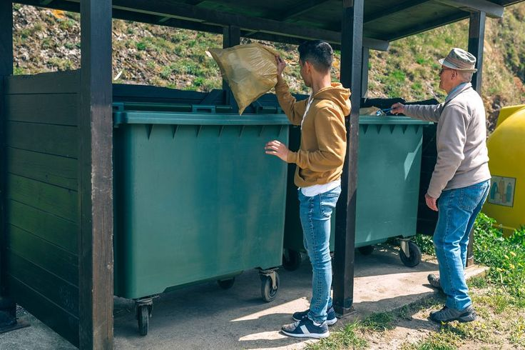

Powerful Features for Smart Waste Management
Everything you need to manage waste collection efficiently in modern smart cities

Smart Bin Monitoring
Real-time fill-level tracking with IoT sensors, weight monitoring, and automatic overflow alerts.

Waste Pickup Requests
Citizens can schedule pickups with waste type, weight estimation, and preferred time slots.
Route Optimization
AI-powered collection routes with real-time traffic data and GPS navigation for drivers.
Analytics Dashboard
Interactive charts and reports for administrators with waste trends and recycling metrics.
Smart Alerts
Automatic notifications for bin overflow, low battery, missed pickups, and system issues.
Recycling Education
Tips and guidelines to promote proper waste segregation and increase recycling rates.